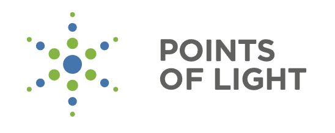
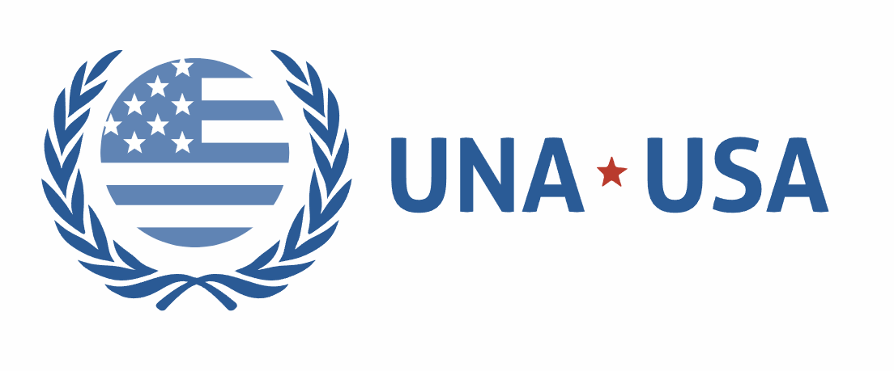
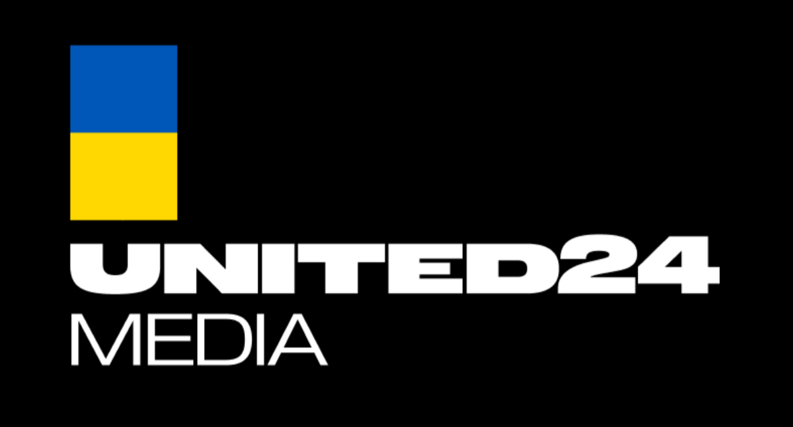

Builder · Researcher · Writer · Founder · Dreamer
18 · Youngest ERA Fellow Ever · Stanford Gap Year · Cambridge, UK
Caspar David Friedrich · Wanderer Above the Sea of Fog · 1818
“We have to continually be jumping off cliffs and developing our wings on the way down.” — Kurt Vonnegut
Three organizations founded. Each in a different domain, each before age eighteen. Admitted to Stanford University after applying a year early (fall of junior year). Then: youngest person ever admitted to the ERA Fellowship in Cambridge. Zero AI safety experience to accepted in under two months. Turned 18 one day before starting.
I’m Sophie — 18, on a gap year before Stanford, and I’ve been building things for as long as I can remember. I founded my first organization at 12 and two more before I graduated high school as valedictorian of a class of 671.
Late last year, I went from no AI safety experience to youngest person ever admitted to the ERA Fellowship in Cambridge in under two months — I turned 18 on the flight to the UK. At ERA, I’m building bioweapon.ai and researching tiered access controls for AI bio capabilities.
There has never been a doubt in my mind that startups are the right path. It’s just a matter of what and when.
Intergenerational debt does not end with repayment to those behind. It extends forward, to all who come after.
700+ members across 30+ countries. Dedicated team of 20+ volunteers. $4K+ in grants from Jane Goodall Institute, National Contribution Project, Bow Seat Ocean Awareness. UNESCO Youth Multimedia Contest winner (<0.3% acceptance). Featured by Blue Shield, Project Green Schools, SevenSeas Media.
Independently organized & facilitated 8-week in-person program bringing together Republican/Democratic youth for a series of civil discussions on political issues. Received $2.5K grant funding from winning Civics Unplugged Innovation in Democracy Pitch Contest + Riley’s Way Foundation Call for Kindness Fellowship. Partnered with Braver Angels (largest 501c3 nationwide working on depolarization) & featured in Bridging the Gap Documentary. 8K+ views on YouTube, 10K+ impressions on social media.
Jewelry fundraiser for Ukraine; independently designed & sourced merchandise with 100% of profits donated to Ukrainian organizations. Partnered with UNITED24 (official fundraising platform of Ukraine founded by President Zelenskyy), DAWN Inc, House of Ukraine, Brighter Ukraine Foundation, Angels of Ukraine. Donated $5,598 of merchandise for events-based fundraising model; raised $3K+ directly for total $8K+ to date; 120K+ social media impressions.
2% acceptance rate. Explored topics such as longtermism, cosmopolitanism, & rationality. Authored research paper on optimizing nonprofit messaging strategies to maximize charitable contributions from small donors.
Chosen as the sole representative of my high school to attend California Girls State. Then selected as one of two delegates to attend Girls Nation in Washington, D.C. from a pool of ~420 attendees at State. Fully funded trip to Washington, D.C. <0.48% acceptance rate.
One of 30 selected worldwide (2% acceptance rate). Studied symbolic logic, rationality, Bayesian statistical reasoning, etc. Progressed past each stage of intensive three-stage application process, including written application, puzzle quiz, and 1.5-hour-long interview. The turn.
Graduated #1 of 671. 9 APs in junior year alone. 25 college courses via dual/concurrent enrollment. Associate’s Degree in Marketing. HEC Paris Executive Certification (youngest ever). 2× TEDx Speaker. Congressional Award Gold Medal. H.W. Bush Daily Point of Light Award. National Spanish Exam Gold Medal (99th percentile, sole Gold Medalist at my school).
Youngest person ever admitted. Zero to accepted in under 2 months. <1% acceptance rate. Turned 18 on the flight there. Research: tiered access controls for bio capabilities; interventions on China open-sourcing models; mapping emergent AI-aided biosecurity risks. Building bioweapon.ai.
Wrote expanded AI whistleblower guide to be published on Midas Project website. Reviewed by Institute for Law & AI, AI Whistleblower Initiative, & Midas Project lawyer.
Working on movement-building initiative & digital community-building efforts. Wrote piece on “loss of control” to be published on AI Frontiers; $1K compensation.

Daily Point of Light Award profile — founding environmental and political organizations at the intersection of two urgent crises.
Read →Coverage of TCAGI’s growth to 700+ members across 30+ countries and Sophie’s ocean and climate advocacy.
Read →Highlighted for TCAGI’s eco-anxiety work and youth mental health advocacy.
Read →
Named Global Goals Ambassador for SDG 14: Life Below Water — representing youth leadership on ocean protection at the United Nations.
Read →Featured for founding Chains of Hope in support of Ukraine — and for environmental and civil discourse work at 17.
Listen →
Featured by UNITED24 — Ukraine’s official fundraising platform — for designing stainless steel necklaces engraved with “I stand with Ukraine” and donating all profits. 5.6K likes.
View →
If you’re building something that matters
at civilizational scale, I want to hear about it.